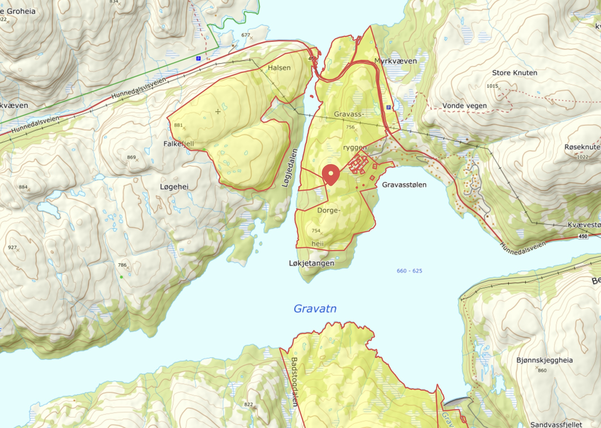

🤝 Eksklusiv fiskeavtale i Gravvatn
Vi har en lokal avtale med grunneier som gir gjester på Gravassryggen mulighet til å fiske i det avtalte området.
Avtalen gjelder kun for gjester som bor på hytta, og kun innenfor området som er markert på kartet nedenfor.
Vis hensyn, følg lokale regler og ta med alt avfall tilbake.
🗺 Kart over fiskeområde
Kartet nedenfor viser området som omfattes av avtalen. Våre gjester har eksklusiv fiskerett der den røde tomtelinjen møter vannet.

🎫 Fiskekort
De fleste fiskevann i Sirdal krever gyldig fiskekort. Alle over 16 år må kjøpe fiskekort før de fisker.
Fysiske fiskekort kan også kjøpes hos Sirdal turistinformasjon på Kvæven.
🎣 Siravassdraget
Omfatter en rekke vann og elver i Sirdal.
🐟 Sirdalsvatn
Fiskekort for fiske i Sirdalsvatn.
🌿 Viktig å huske
- Fisk kun i områder der dere har gyldig rett eller fiskekort.
- Ta med alt søppel tilbake.
- Vis hensyn til grunneiere, dyr og andre som bruker området.
- Følg lokale fiskeregler og eventuelle begrensninger.